For my graduation project i created a digital interactive product to make the process of moving less stressful and chaotic. I worked alongside a real-estate company to create an app that helps with sorting stuff, getting tasks done and gives reminders for moving centred tasks
The Final Product
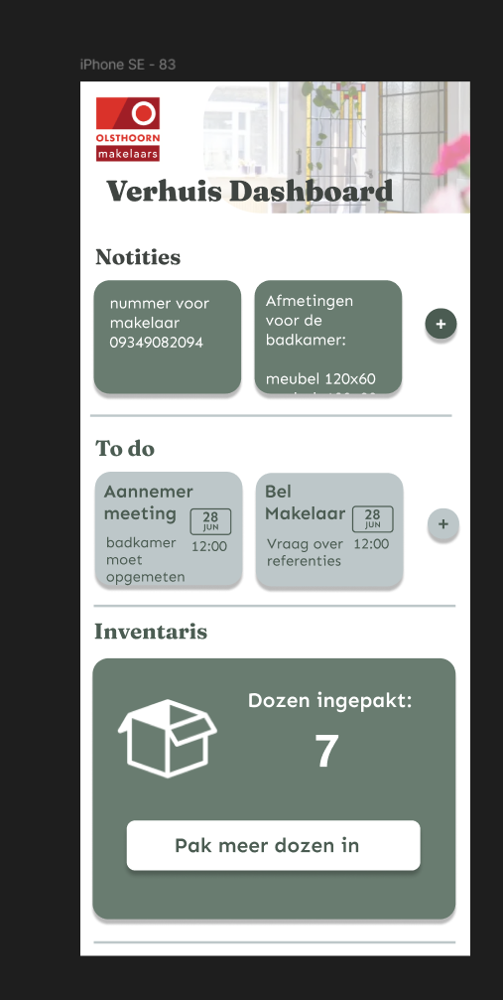 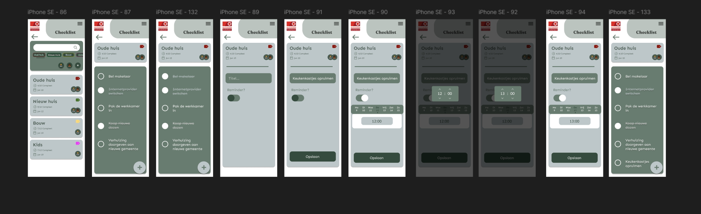 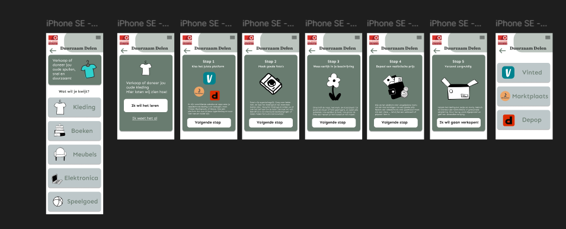 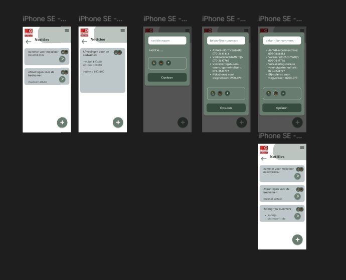 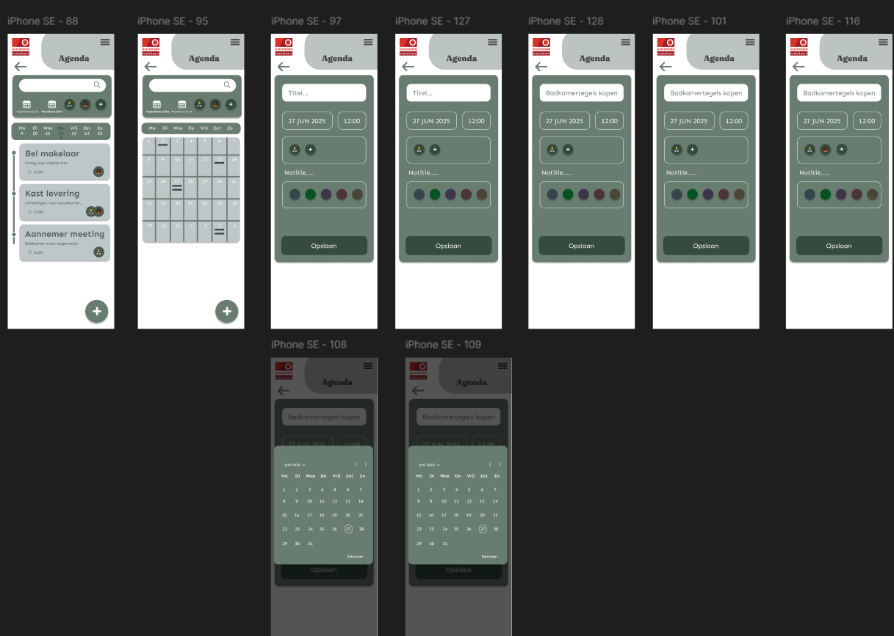 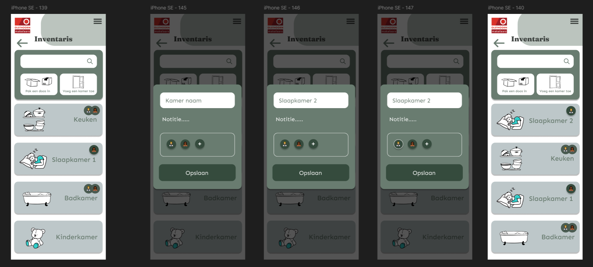 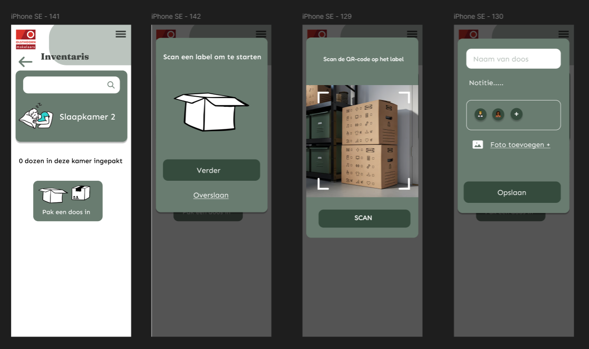
Concept Ideas
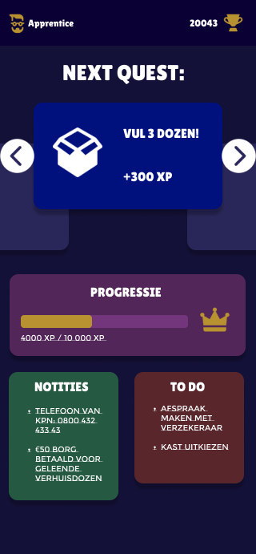 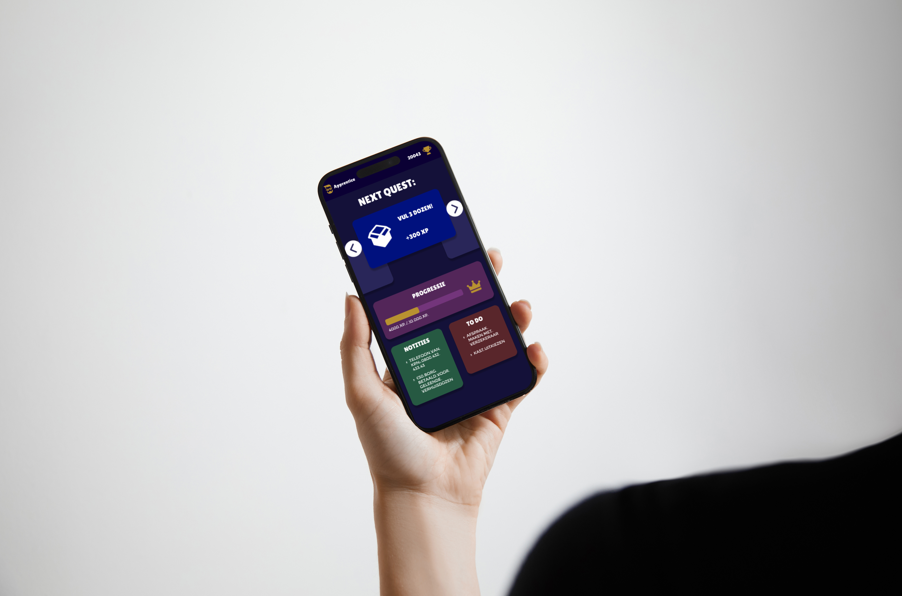 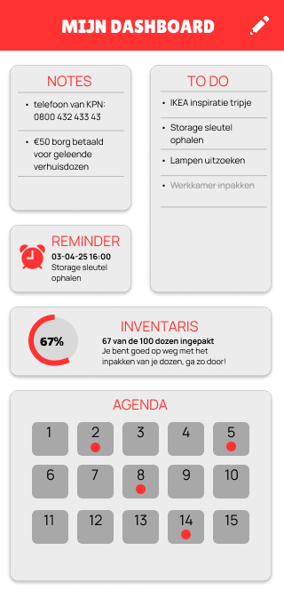 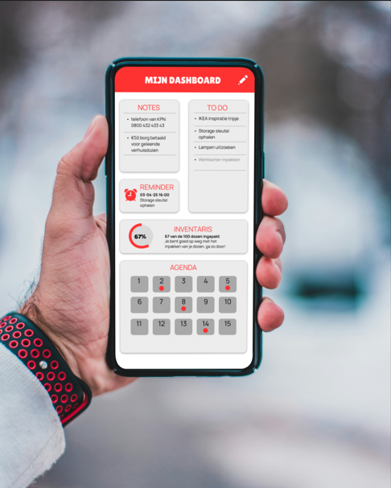 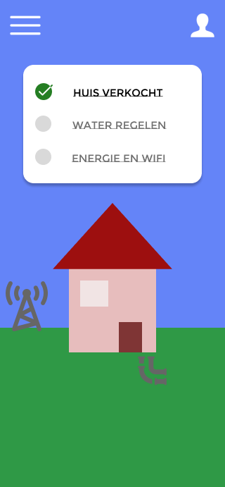 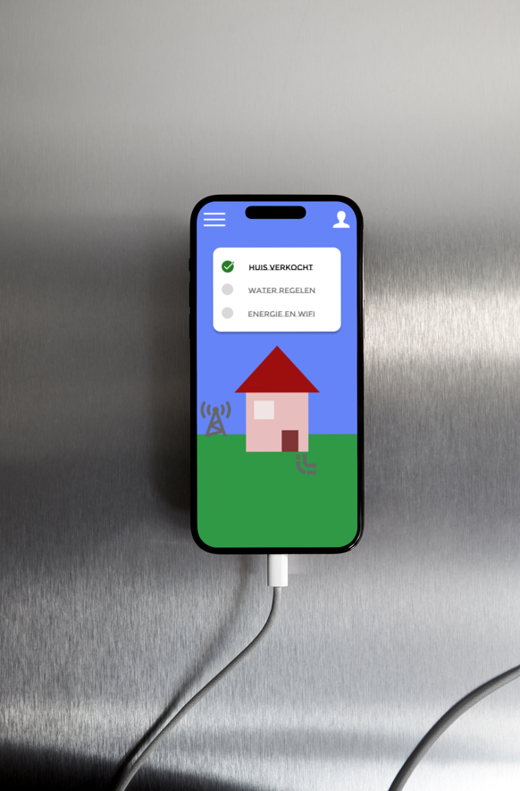Some research methods
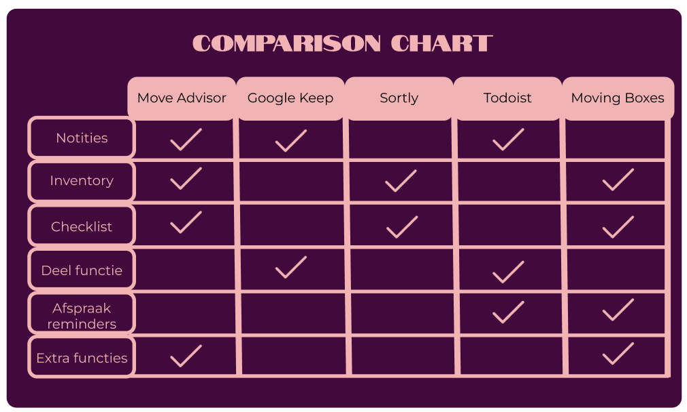 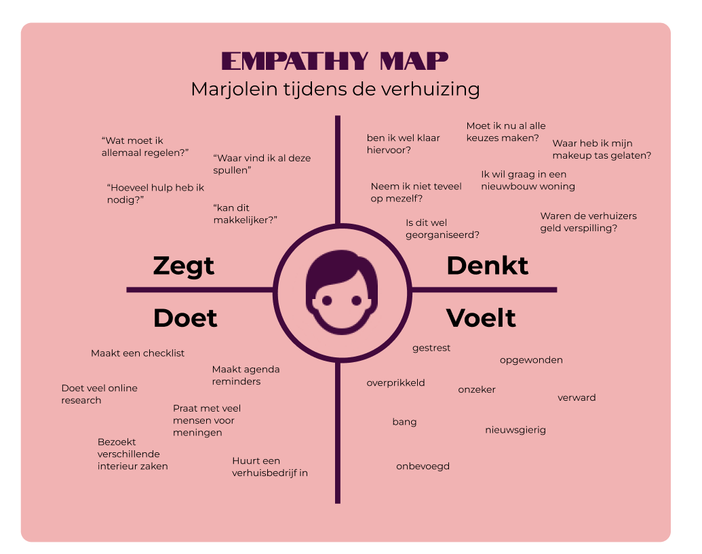 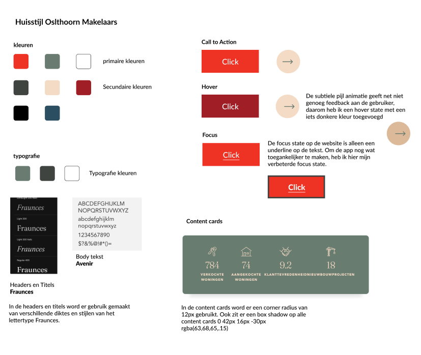 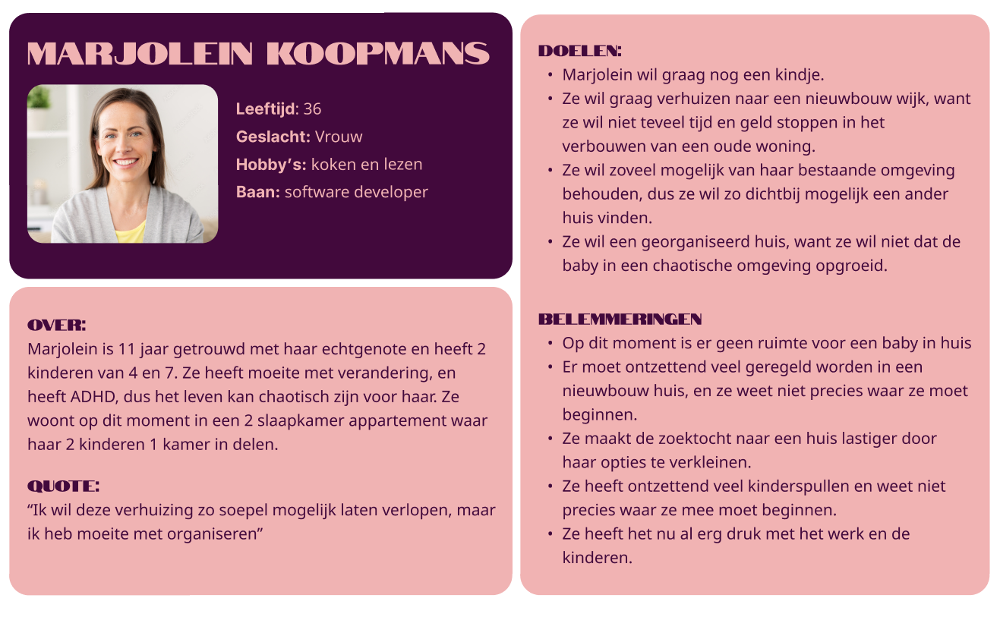 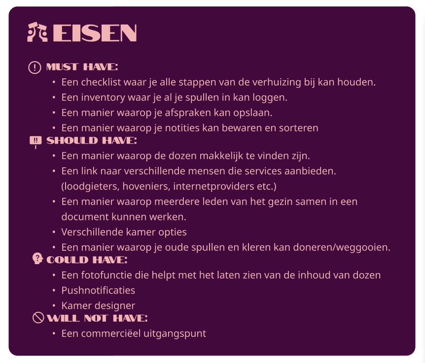 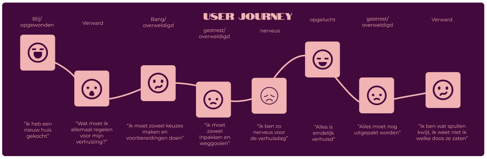Also check out:
Web Design<--
-->Internship Nederlandse Loterij